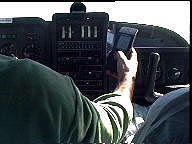
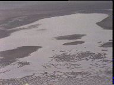
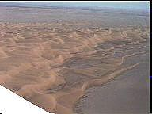
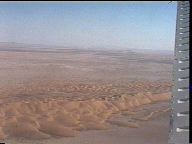
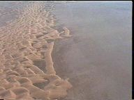
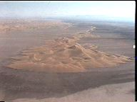
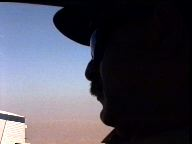

Third Trip by Airplane
In this trip we used an Aerospatial Tobago plane to see from above what the centre of Rig-e Jenn looks like.
These images are captured from a Hi8 video taken by Nezam Manouchehri who accompanied me and Behrouz and did all the photography.

Yours truly piloting the Tobago and using the GPS device at the same time. GPS gave us confidence and facilitated our return.

Vast salt planes on the way to Rig-e Jenn.


Four views of the sand dunes in Rig-e Jenn. Note the underlying plane with some salt patches.

Behrouz Ziaii looking at the desert, perhaps contemplating about using camels on the next trip.